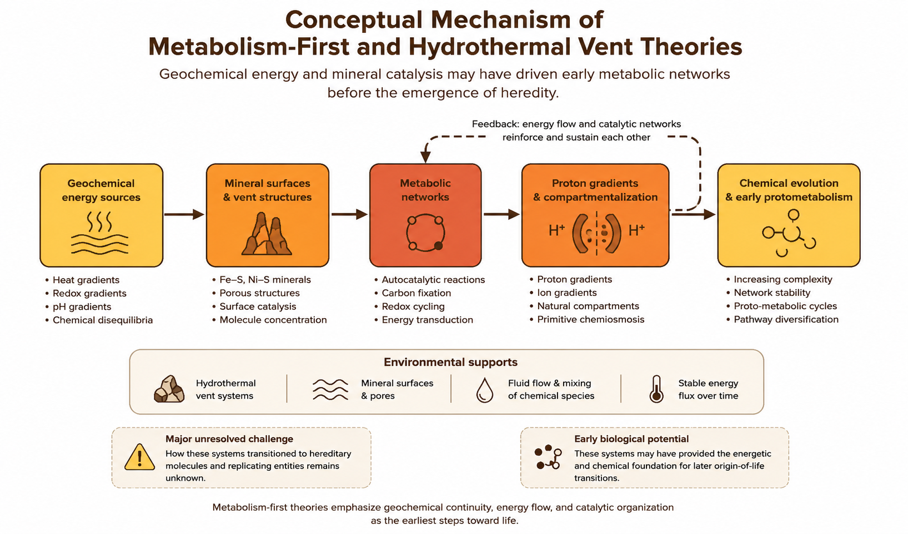
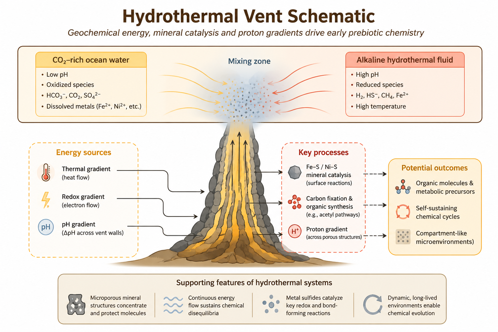

Chapter 4 Metabolism-First and Hydrothermal Vent Theories
4.1 Chapter Overview
This chapter examines metabolism-first and hydrothermal vent theories, which propose that organized energy-driven chemical networks may have emerged before modern genetic systems. Unlike RNA-centered models that prioritize heredity, these theories emphasize geochemistry, catalytic surfaces, energy gradients, and self-sustaining metabolic reactions as the earliest foundations of life.
The chapter reviews the historical development of metabolism-first models, their mechanistic foundations, supporting evidence, major criticisms, and their role within modern hybrid models of abiogenesis.
4.2 Key Terms
- Metabolism-first
- Hydrothermal vents
- Proton gradients
- Geochemical energy
- Catalytic surfaces
- Redox chemistry
- Autocatalytic networks
- Alkaline vents
4.3 Core Idea
Metabolism-first theories propose that life began through the emergence of self-organizing chemical reaction networks powered by naturally occurring energy gradients. In this framework, primitive metabolic processes may have developed before fully formed genetic systems such as RNA or DNA.
Many versions of the theory focus on hydrothermal vent environments, where hot mineral-rich fluids interact with colder ocean water to produce strong chemical disequilibria and continuous energy flow. These environments may have provided natural settings capable of supporting increasingly complex prebiotic chemistry (Martin et al. 2008; Wächtershäuser 1988).
Rather than beginning with heredity, metabolism-first models propose that the earliest steps toward life involved energy transformation, catalytic chemistry, and geochemically sustained reaction systems.
4.4 Historical Context
Metabolism-first ideas emerged partly in response to limitations in earlier origin-of-life models. Although primordial soup and RNA World theories explain important aspects of prebiotic chemistry and heredity, they do not fully explain how early systems obtained continuous energy or maintained organized chemical activity.
One influential metabolism-first framework was proposed by Günter Wächtershäuser, who suggested that life may have originated on mineral surfaces rich in iron and sulfur compounds (Wächtershäuser 1988). Later work by Michael Russell, William Martin, and others emphasized alkaline hydrothermal vent systems as plausible environments for early metabolic organization (Martin et al. 2008).
These theories shifted attention from isolated molecules toward dynamic geochemical systems capable of sustaining continuous chemical reactions.
4.5 Mechanistic Basis
To understand metabolism-first theories, it is necessary to examine the role of energy gradients in prebiotic chemistry.
Hydrothermal vent environments naturally generate differences in temperature, pH, redox state, and chemical composition. These gradients can drive reactions that would otherwise be energetically unfavorable. Mineral surfaces containing iron, sulfur, nickel, and related compounds may also act as catalysts that promote organic synthesis and electron transfer reactions.
In metabolism-first models, early chemical systems may have developed through:
- Continuous geochemical energy flow
- Catalytic mineral surfaces
- Redox reactions
- Carbon fixation pathways
- Self-reinforcing chemical cycles
- Proton gradients across mineral compartments
Figure 4.1 provides a systems-level overview of the conceptual mechanism proposed by metabolism-first and hydrothermal vent theories.

Figure 4.1: Conceptual mechanism of metabolism-first and hydrothermal vent theories.
The figure illustrates the central idea behind metabolism-first models: naturally occurring geochemical energy gradients and mineral-catalyzed reaction networks may have generated increasingly organized chemical systems before the emergence of heredity.
Unlike RNA-centered hypotheses, these theories prioritize energy flow, catalytic organization, and thermodynamic disequilibrium as the earliest foundations of life.
4.6 Hydrothermal Vent Environment
Many metabolism-first models focus specifically on alkaline hydrothermal vent systems as plausible environments for prebiotic chemistry.
Hydrothermal vents contain strong gradients in temperature, pH, electron availability, and chemical composition. Mineral-rich vent walls also provide naturally porous structures capable of concentrating molecules and supporting catalytic reactions.
Figure 4.2 illustrates how hydrothermal vent systems may have generated favorable conditions for early metabolic chemistry.

Figure 4.2: Hydrothermal vent schematic illustrating geochemical gradients, catalytic surfaces, and potential pathways for prebiotic chemistry.
The schematic highlights several important features emphasized by hydrothermal vent theories:
- Continuous thermal and chemical energy flow
- Redox disequilibrium between vent fluids and ocean water
- Proton gradients across porous mineral structures
- Iron–sulfur mineral catalysis
- Natural compartment-like microenvironments
- Concentration and stabilization of reacting molecules
Together, these features may have allowed early chemical systems to maintain organized reaction networks over extended periods of time.
4.7 Environmental Setting
Hydrothermal vent systems are considered particularly important because they provide long-lasting and chemically active environments capable of sustaining continuous reactions.
Alkaline hydrothermal vents contain naturally occurring microporous mineral structures that resemble primitive compartments. These mineral pores may have concentrated molecules, stabilized reactions, and maintained proton gradients analogous to those used by modern cells for energy production.
Unlike shallow surface environments that experience rapid fluctuations, hydrothermal systems may provide relatively stable conditions over long geological timescales.
This environmental continuity is one of the major strengths of metabolism-first models.
4.8 What the Theory Explains Well
Metabolism-first theories are particularly strong at explaining:
- Continuous energy flow
- Geochemical organization
- Catalytic reaction networks
- Carbon fixation pathways
- Environmental continuity between geology and biology
- Natural proton gradients resembling modern bioenergetics
These theories provide one of the strongest explanations for how early chemical systems may have maintained organized activity before the appearance of complex hereditary molecules.
The framework is especially important because all living systems require continuous energy processing. Metabolism-first theories therefore address one of the central thermodynamic challenges of abiogenesis.
4.9 What Makes It Plausible
Several observations support the plausibility of metabolism-first and hydrothermal vent models:
- Modern hydrothermal vents contain rich chemical and thermal gradients
- Many ancient enzymes rely on iron–sulfur clusters similar to vent minerals
- Modern cells universally depend on proton gradients for energy production
- Mineral surfaces can catalyze important organic reactions
- Hydrothermal systems provide natural compartment-like structures
These observations suggest that modern biochemistry may preserve traces of ancient geochemical processes.
4.10 Key Experimental and Observational Support
Laboratory experiments demonstrate that mineral surfaces can catalyze organic reactions and support carbon fixation-like pathways under hydrothermal conditions.
Experimental studies have also shown that proton gradients can emerge naturally across mineral barriers, supporting the plausibility of primitive energy transduction systems (Martin et al. 2008).
Geological evidence further confirms that hydrothermal systems existed on the early Earth and likely represented long-lived chemically active environments.
Although no experiment has fully recreated an origin-of-life pathway, modern research increasingly supports the importance of geochemical energy gradients in prebiotic chemistry.
4.11 Major Gaps and Critiques
Despite their strengths, metabolism-first theories face several major limitations.
Most importantly, these models do not fully explain how hereditary systems emerged. Organized metabolism alone is insufficient for Darwinian evolution unless information can also be stored, copied, and transmitted.
Additional challenges include:
- Limited explanation for the origin of genetic information
- Difficulty transitioning from mineral-bound chemistry to free-living cells
- Uncertainty regarding how metabolic cycles became self-sustaining
- Lack of direct evidence for specific early metabolic pathways
- Difficulty reproducing complete metabolic systems experimentally
For these reasons, metabolism-first theories are generally viewed as important but incomplete explanations for abiogenesis.
4.12 Integration with Other Theories
Metabolism-first theories integrate naturally with several other origin-of-life models.
Geochemical systems may have produced organic molecules later incorporated into RNA-based heredity systems. Mineral compartments may also have supported protocell development and lipid membrane formation. Wet–dry cycles and primordial synthesis models may have supplied additional chemical precursors.
In many modern hybrid frameworks, metabolism-first chemistry provides the energetic and geochemical foundation upon which heredity and cellular organization later developed.
4.13 Systems Perspective
Within the comparative framework of this book, metabolism-first theories primarily address the second major hurdle of abiogenesis: the emergence of organized chemical systems powered by continuous energy flow.
Their greatest strength lies in explaining how chemistry may have become thermodynamically organized before the appearance of sophisticated biological machinery. However, these theories do not independently explain heredity or fully developed evolutionary systems.
Consequently, metabolism-first models are best understood as one component within broader systems-level explanations of life’s emergence.
4.14 Modern Relevance
Metabolism-first theories continue to influence origin-of-life research, geochemistry, systems chemistry, astrobiology, and studies of planetary habitability.
Because hydrothermal systems may exist on icy moons such as Europa and Enceladus, these theories also play an important role in the search for extraterrestrial life.
The idea that life may emerge naturally in environments with persistent energy gradients has become increasingly important in modern astrobiology.
4.15 Current Scientific Standing
Metabolism-first and hydrothermal vent theories remain highly influential within contemporary origin-of-life research. Although they are rarely treated as complete standalone explanations, they are widely regarded as strong models for understanding early energy organization and geochemical continuity.
Modern origin-of-life studies increasingly integrate metabolism-first concepts with RNA-based heredity, mineral catalysis, lipid compartment formation, and environmental cycling models.
4.16 Comparative Assessment
| Dimension | Assessment |
|---|---|
| Primary Contribution | Energy flow, geochemical organization, and early metabolic systems |
| Explanatory Strength | Strong for thermodynamics and catalytic chemistry |
| Mechanistic Plausibility | Moderate to high |
| Experimental Support | Moderate |
| Environmental Realism | Strong for hydrothermal systems |
| Main Limitation | Weak explanation for heredity and replication |
| Integrative Potential | High |
| Current Scientific Standing | Influential but incomplete component of abiogenesis models |
4.17 Comparative Performance
| Question | Metabolism-First Performance |
|---|---|
| Produces organic building blocks? | Moderate |
| Explains organized chemistry? | Strong |
| Explains heredity? | Weak |
| Explains metabolism? | Strong |
| Explains compartment formation? | Moderate |
| Supported experimentally? | Moderate |
| Useful in hybrid models? | Strong |